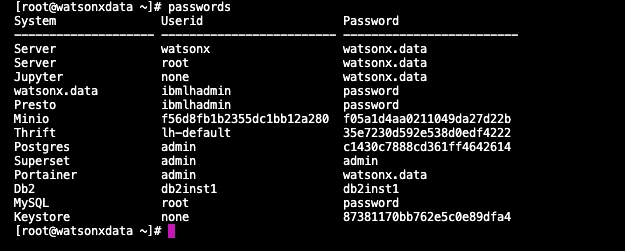

Passwords
This table lists the passwords for the services that have "fixed" userids and passwords.
| Service | Userid | Password |
|---|---|---|
| Virtual Machine | watsonx | watsonx.data |
| Virtual Machine | root | watsonx.data |
| watsonx.data UI | ibmlhadmin | password |
| Jupyter Notebook | none | watsonx.data |
| Presto | ibmlhadmin | password |
| Minio | Generated | Generated |
| Postgres | admin | Generated |
| Apache Superset | admin | admin |
| Portainer | admin | watsonx.data |
| Db2 | db2inst1 | db2inst1 |
| MySQL | root | password |
| Milvus | ibmlhadmin | password |
| SSH Browser | none | watsonx.data |
Use the following commands to get the generated userid and password for MinIO.
Extract MinIO userid and password
export LH_S3_ACCESS_KEY=$(docker exec ibm-lh-presto printenv | grep LH_S3_ACCESS_KEY | sed 's/.*=//')
export LH_S3_SECRET_KEY=$(docker exec ibm-lh-presto printenv | grep LH_S3_SECRET_KEY | sed 's/.*=//')
echo "MinIO Userid : " $LH_S3_ACCESS_KEY
echo "MinIO Password: " $LH_S3_SECRET_KEY
Use the following command to get the password for Postgres.
Extract Postgres userid and password
export POSTGRES_PASSWORD=$(docker exec ibm-lh-postgres printenv | grep POSTGRES_PASSWORD | sed 's/.*=//')
echo "Postgres Userid : admin"
echo "Postgres Password : " $POSTGRES_PASSWORD
You can get all passwords for the system when you are logged by issuing the following command:
Extract all userids and passwords
cat /certs/passwords
If the passwords do not appear to work, you may need to regenerate them. The following must be run as the root user.
Generate userid and password list
sudo su -
passwords
The passwords command will refresh the passwords and also display them. If this command is not run as root, an error message will be displayed because the password file cannot be updated as the watsonx user.

Watsonx.data Connection Certificate
When connecting to the watsonx.data Presto database, you will need to have the connection certificate available to the client that you are using. Usually this location is your workstation, but it could be another service like CP4D.
To extract the certificate to your local file system, use the following command in a terminal window. Replace the port and region.services.cloud.techzone.ibm.com with the SSH values found in the TechZone reservation.
Download watsonx.data certificate
scp -P port watsonx@region.services.cloud.techzone.ibm.com:/certs/presto-key.jks /Users/myname/Downloads
Change the target directory to a location that you can remember!
You can also download the certificate by using the Jupyter Notebook link and opening the Credentials notebook. There you will find links to the certificates.

If you need to generate the certificate, you can use the following commands from within a local terminal session:
Generate Certificate
This command will generate a certificate called presto.crt. You can print the contents of the file and use that for input into CP4D dialogs that require the certificate text.
Generate watsonx.data certificate
rm -f presto.crt
echo QUIT | openssl s_client -showcerts -connect localhost:8443 | awk '/-----BEGIN CERTIFICATE-----/ {p=1}; p; /-----END CERTIFICATE-----/ {p=0}' > presto.crt
cat presto.crt
Generate Java Key Store
The following command will require a password for the keystore. The password can be anything you want, but it is set to watsonx.data in the Developer Edition. You must also accept the list of DNS names that are displayed in the list. The default is no! The keystore that is created is called presto-key.jks.
Generate watsonx.data keystore
rm -f presto-key.jks
keytool -import -alias presto-cert -file ./presto.cert -keystore ./presto-key.jks